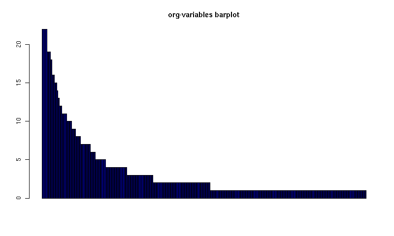
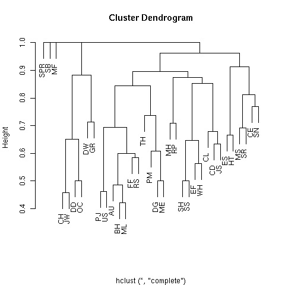
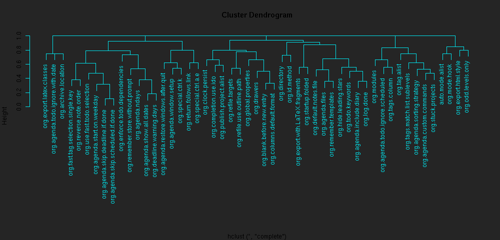
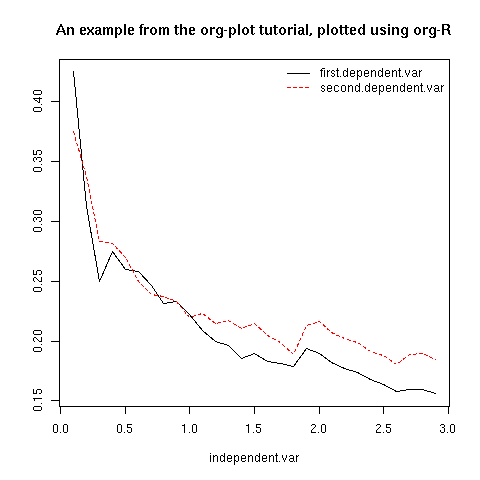

Plotting data
Available off-the-shelf plotting commands
At the risk of this starting to sound like a bad and boring undergraduate statistics textbook, the sort of plots that are appropriate depend on the sort of data. Let's divide it up as
- discrete-valued data [e.g. data-set-1 above, or the list of org variables customised by users]
- continuous-valued data [e.g. the wing lengths of all Eagle Owls in Europe]
- indexed data [e.g. a data set in which each point is a time, together with the size of the org source code base at that time]
The available off-the-shelf actions are listed here.
Continuous data example:
We're going to need some data. So let's prove that org can also speak statistics and use org-R to simulate the data. This requires some raw R code, so skip this bit if you're not interested.
The following #+TBLRR line simulates 10 values from a Normal distribution with mean -3, and 10 values from a Normal distribution with mean 3, and lumps them together. The point is that the numbers we get should be concentrated around two different values, and we should be able to see that in a histogram and/or density plot.
#+TBLRR: x <- c(rnorm(10, mean=-3, sd=1), rnorm(10, mean=3, sd=1)) #+TBLR: title:"continuous-data" output-to-buffer:t
Here's what I got. Note that the title: option set the name of the table with "#+TBLNAME"; we'll use that to refer to these data.
#+TBLNAME:continuous-data | values | |-------------------| | -2.48627002467785 | | -4.0196287273144 | | -3.43471960580471 | | -5.21985294534255 | | -3.84201126431028 | | -1.72912705369668 | | -2.86703950990613 | | -2.82292622464752 | | -4.43246430621368 | | -1.03188727658288 | | 0.882823532068805 | | 3.28641606039499 | | 3.56029698321959 | | 2.91946660223152 | | 2.32506089804876 | | 3.3606298511366 | | 5.19883523425104 | | 4.86141359164329 | | 2.90073505260204 | | 4.21163939487907 |
Now to plot the data. Let's have some colour as well, and this time the title: option will be used to put a title on the plot (and also to name the file link to the graphical output).
[[file:tmp.png][histogram example]] #+TBLR: action:hist columns:1 colour:hotpink #+TBLR: intable:continuous-data outfile:"png" title:"histogram example"

[Note that you can use multiple TBLR lines rather than cramming all the options on to one line.]
An alternative would be to produce a density plot. We don't have enough data points to justify that here, but we'll do it anyway just to show the sort of plots that are produced. This time we'll specify the output file for the png image using the output: option. (For the histogram we used output:"png". That's a special case; it doesn't create a file called "png" but instead uses org-attach to store the output in the org-attach dir for this entry. Same thing for the other available output image formats: "jpg", "jpeg", "pdf", "ps", "bmp", "tiff")
[[file:density.png][density plot example]] #+TBLR: action:density columns:"values" colour:chartreuse4 args:(:lwd 4) #+TBLR: intable:continuous-data outfile:"density.png" title:"density plot example"

There were a couple of new features there. Firstly, I referred to column 1 using its column label, rather than with the integer 1. Secondly, note the use of the args: option. It takes the form of a lisp property list ("p-list"), specifying extra arguments to pass to the R function (in this case density()). Here we used it to set the line thickness (lwd=4).
Discrete data example: the configuration variables survey
The raw data, as collected by Manish, is in a table called org-variables-table, in a file called variable-popcon.org. We use the file: option to specify the org file containing the data, and the table: option to specify the name of the table within that file. [An alternative be to give the entry containing the table a unique id with org-id-get-create, refer to it with table:<uid>, and rely on the org-id mechanism to find it.].
Now we tabulate the data. (We're not currently taking the sensible step that Manish did of checking whether the variables were given values different from their default).
Rather than cluttering up this org file with all the count data, we'll store them in a separate org file:
[[file:org-variables-counts.org][org-variables-counts]] #+TBLR: action:tabulate columns:2 sort:t #+TBLR: infile:"variable-popcon.org" intable:"org-variables-table" #+TBLR: outfile:"org-variables-counts.org" title:"org-variables-counts"
We can see the top few rows of the table by using action:head
| rownames(x) | value | count | |-------------+-----------------------------+-------| | 1 | org-agenda-files | 22 | | 2 | org-agenda-start-on-weekday | 22 | | 3 | org-log-done | 22 | | 4 | org-todo-keywords | 22 | | 5 | org-agenda-include-diary | 19 | | 6 | org-hide-leading-stars | 19 | #+TBLR: action:head #+TBLR: infile:"org-variables-counts.org" intable:"org-variables-counts" output-to-buffer:t
Here's a barplot of the counts. It makes it clear that over half the org variables are customised by only one or two users.
[[file:org-variables-barplot.png][org-variables barplot]] #+TBLR: action:barplot rownames:t columns:1 width:800 col:darkblue #+TBLR: args:(:names.arg "NULL") #+TBLR: infile:"org-variables-counts.org" intable:"org-variables-counts" #+TBLR: outfile:"org-variables-barplot.png" title:"org-variables barplot"

Something more complicated: clustering org variables, and org users
OK, let's make a bit more use of R's capabilities. We can use the org-variables data set to define distances between pairs of org users (how similar their customisations are), and distances between pairs of org variables (the extent to which people who customise one of them customise the other). Then we can use those distance matrices to cluster org users, and org variables.
First, let's create a table that's restricted to variables that were customised by more than four users. That's going to require a bit of R code:
[[file:variable-popcon-restricted.org][org-variables-table]] #+TBLR: infile:"variable-popcon.org" intable:"org-variables-table" #+TBLR: outfile:"variable-popcon-restricted.org" title:"org-variables-table" #+TBLRR: tab <- table(x[,2]) #+TBLRR: x <- subset(x, Variable %in% names(tab[tab > 4]))
Now let's make a table with a row for each variable, and a column for each org user, and fill it with 1s and 0s according to whether user j customised variable i. We can do that without writing any R code:
[[file:org-variables-incidence.org][incidence-matrix]] #+TBLR: action:tabulate columns:(1 2) rownames:t #+TBLR: infile:"variable-popcon-restricted.org" intable:"org-variables-table" #+TBLR: outfile:"org-variables-incidence.org" title:"incidence-matrix"
First we'll cluster org users. We use the R function dist to compute a distance matrix from the incidence matrix, then hclust to run a hierarchical clustering algorithm, and then plot to plot the results as a dendrogram:
[[file:org-users-tree.png][org-users-tree.png]] #+TBLRR: par(bg="gray15", fg="turquoise2") #+TBLRR: plot(hclust(dist(x, method="binary")), ann=FALSE) #+TBLR: infile:"org-variables-incidence.org" intable:"incidence-matrix" rownames:t #+TBLR: outfile:"org-users-tree.png" title:"org-users-tree.png"

And to cluster org variables, we use the transpose of that incidence matrix:
[[file:org-variables-tree.png][org-variables-tree.png]] #+TBLRR: par(bg="gray15", fg="turquoise2") #+TBLRR: plot(hclust(dist(t(x), method="binary")), ann=FALSE) #+TBLR: infile:"org-variables-incidence.org" intable:"incidence-matrix" rownames:t #+TBLR: outfile:"org-variables-tree.png" title:"org-variables-tree.png" width:1000

Please note that my main aim here was to give some examples of using org-R, rather than to show how the org variables data should be mined for useful information! The org-variables dendrogram does seem to have made some sensible clusterings (e.g. the clusters of agenda-related commands), but I'm going to leave it to others to decide whether this exercise really served to do more than illustrate org-R. Does anyone recognise any usage affinities between the clustered org users?
Indexed data example
Let's plot the same data as Eric Schulte used in the org-plot tutorial on worg.
[[file:/usr/local/src/org-etc/Worg/org-tutorials/org-R/data/45/f39291-3abc-4d5b-96c9-3a32f77877a5/org-R-output-8119M2O.png][An example from the org-plot tutorial, plotted using org-R]] #+TBLR: action:lines columns:((1)(2 3)) #+TBLR: infile:"../org-plot.org" #+TBLR: intable:"org-plot-example-1" outfile:"png" #+TBLR: title:"An example from the org-plot tutorial, plotted using org-R"
